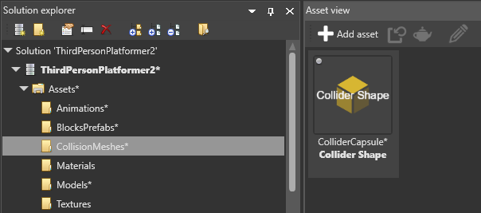

Collider shapes
Warning
Приносим свои извинения за неудобства. Для этой страницы нет перевода на русский язык. Она будет отображаться на английском языке.
Beginner Designer
For colliders to interact, you need to set their shape in the Property Grid. You can specify a geometric shape, or use a collider shape asset.

Components can have multiple intersecting shapes, and don't have to match the entity model, if it has one. Each shape has additional properties including size, orientation, offset, and so on.
Types of collider shape
Box

| Property | Description |
|---|---|
| Is 2D | Makes the box infinitely flat in one dimension. |
| Size | The box size in XYZ values. |
| Local offset | The box position relative its entity. |
| Local rotation | The box rotation in XYZ values. |
Capsule

The capsule shape is especially useful for character components, as its curved base lets the entity move to higher planes (eg when climbing staircases).
| Property | Description |
|---|---|
| Is 2D | Makes the capsule infinitely flat in one dimension. |
| Length | The length of the capsule. |
| Radius | The radius of the capsule. |
| Orientation | The axis along which the shape is stretched (X, Y, or Z). |
| Local offset | The capsule position relative to its entity. |
| Local rotation | The capsule rotation in XYZ values. |
Cone

| Property | Description |
|---|---|
| Height | The height of the cone. |
| Radius | The radius of the cone at the bottom end. |
| Orientation | The axis along which the shape is stretched (X, Y, or Z). |
| Local offset | The cone position relative to its entity. |
| Local rotation | The cone rotation in XYZ values. |
Cylinder
| Property | Description |
|---|---|
| Height | The length of the cylinder. |
| Radius | The radius of the cylinder. |
| Orientation | Sets the axis along which the shape is stretched (X, Y, or Z). |
| Local offset | The cylinder position relative to its entity. |
| Local rotation | The cylinder rotation in XYZ values. |
Sphere
| Property | Description |
|---|---|
| Is 2D | Makes the sphere infinitely flat in one dimension. |
| Radius | The radius of the sphere. |
| Local offset | The sphere position relative to its entity. |
Infinite plane

The infinite plane covers an infinite distance across one dimension. Think of it like a wall or floor stretching into the distance for ever. You can use several infinite planes together to box users in and stop them "tunneling" outside the level.
| Property | Description |
|---|---|
| Normal | Which vector (X, Y, or Z) is perpendicular to the plane. For example, to make an infinite floor, set the normal property to: X:0, Y:1, Z:0. |
| Offset | The plane position relative to its entity. |
Asset
Assigns a collider shape from a collider shape asset (see Collider shape assets below).
| Property | Description |
|---|---|
| Shape | The collider shape asset used to generate the collider shape. |
Collider shape assets
You can also create collider shape assets and use them as your collider shape. This means you can edit the collider shape asset and automatically update it in every entity that uses it.
Create a collider shape asset
In the Asset View (bottom by default), click Add asset.
Select Physics, then select the shape you want to create.

Game Studio creates the new collider shape asset in the CollisionMeshes folder.

Create a collider shape asset from a model
This is useful to quickly create a collider shape that matches a model.
In the Asset View (bottom by default), click Add asset.
Select Physics > Convex hull.
The Select an asset window opens.

Browse to the model asset you want to create a collider shape asset from and click OK.
Game Studio creates a collider shape asset from the model.
Use a collider shape asset
Under the static collider or rigidbody properties, under Collider Shapes, select Asset.

Next to Shape, specify the collider shape asset you want to use.
To do this, drag the asset from the Asset View to the Shape field in the Property Grid. Alternatively, click
 (Select an asset) and browse to the asset.
(Select an asset) and browse to the asset.